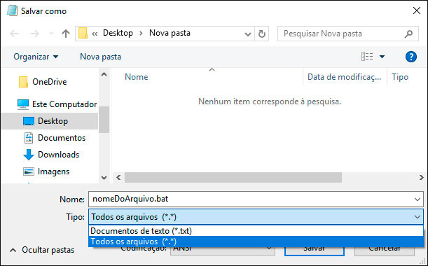

Como proteger seus assets Build PC

Como podem ver na imagem acima, é a estrutura da build windows de projetos do Construct 2, quando enviamos o nosso jogo para a Steam ou até mesmo distribuimos o nosso jogo em sites como Itch.io, Gamejolt, etc, normalmente não utilizarmos alguma proteção dos dados, caso não saiba o arquivo package.nw, é apenas os assets do seu jogo compactados, onde facilmente pode ser modificando para a extenção .rar ou .zip, sendo possível abrir o arquivo ou extrair, dando acesso a todos os assets do projeto. Em uma conversa com o amigo Deco Monteiro, ele me apresentou uma alternativa simples utlizando um script Batch em batch para proteger os arquivos jogo, este que estou abordando neste devlog. Será abordado apenas a proteção para a build Windows. Como no Devlog "Matar processo do NW.exe" o processo para criar o script é bem simples, copie o conteúdo texto abaixo que está dentro quadro, cole em um bloco de notas, escolha a opção Salvar Como..., na próxima janela, existem 2 opções, Nome do Arquivo e Tipo escolha Tipo e depois a opção Todos os arquivos, agora mude a extenção de .txt para .bat, feito isso basta colocar o arquivo na pasta onde está os arquivos da build do projeto e executar.  Após executar o batch será gerado um novo arquivo com o nome renomeieSeuJogo.exe, que é auto sugestivo, este arquivo contém o nw.exe + package.nw compilados para apenas um arquivo binário, desta forma seus arquivos agora tem uma camada de proteção, também foi criado uma pasta chamada backup e movido os arquivos que foram usados no processo, também foi criado junto um arquivo .txt contendo instruções caso seu jogo não funcione. Como podem perceber, este script é bem simples, se comparado com o Devlog "Matar processo do NW.exe".
echo off
md backup
copy /b nw.exe+package.nw renomeieSeuJogo.exe
move nw.exe backup
move package.nw backup
copy NUL ajuda.txt
echo Foi gerado um novo arquivo, agora colocando uma camada de protecao ao seus assets. > ajuda.txt
echo Tambem foi criado uma pasta com o nome backup, para guardar os arquivos antigos, caso tenha algum problema no processo. >> ajuda.txt
echo Agora basta apenas renomear o arquivo "renomeieSeuJogo.exe", pode distribuir. >> ajuda.txt
echo Script criado por Fred Oliveira. >> ajuda.txt
move ajuda.txt backup
timeout / 3
exit
Clique no Spoiler para ver a explicação do código